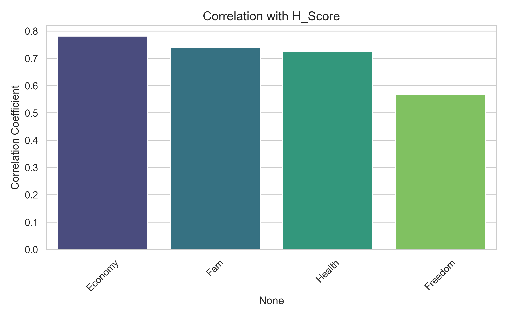
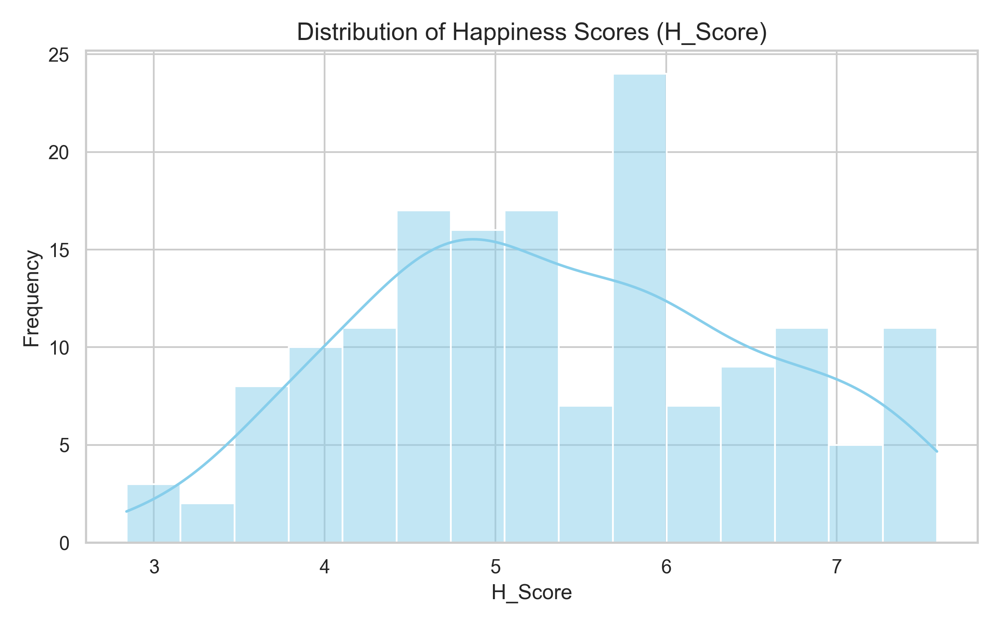
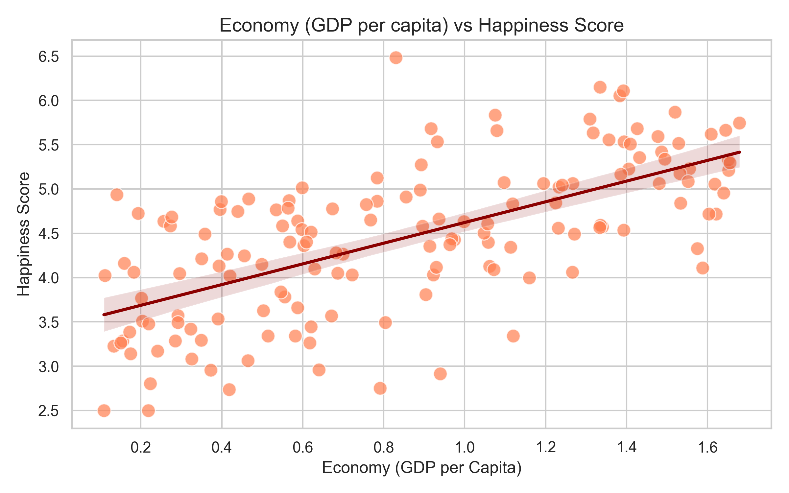

This report presents the visualizations of the data from the Global Happiness Index (GHI) report, analyzing factors like Economy, Family, Health, Freedom, and their impact on the Happiness Score.
Visualizes the correlation between Economy, Family, Health, Freedom, and the Happiness Score to determine which factors have the strongest impact.

A histogram showcasing the statistical distribution of Happiness Scores across the dataset.

A scatter plot analyzing the direct relationship between a country's Economy (GDP per capita) and its Happiness Score, with an overlaid trend line.
